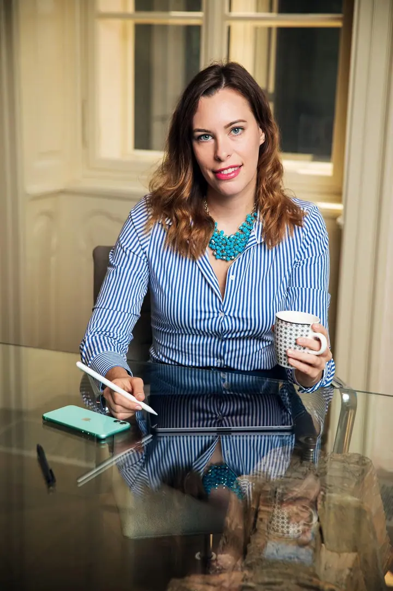
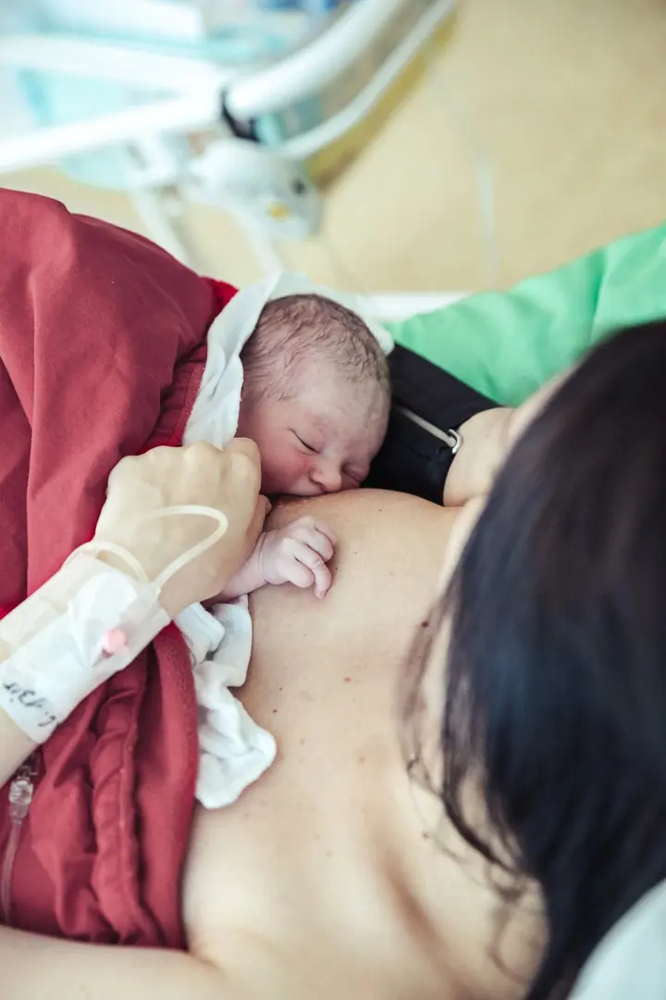
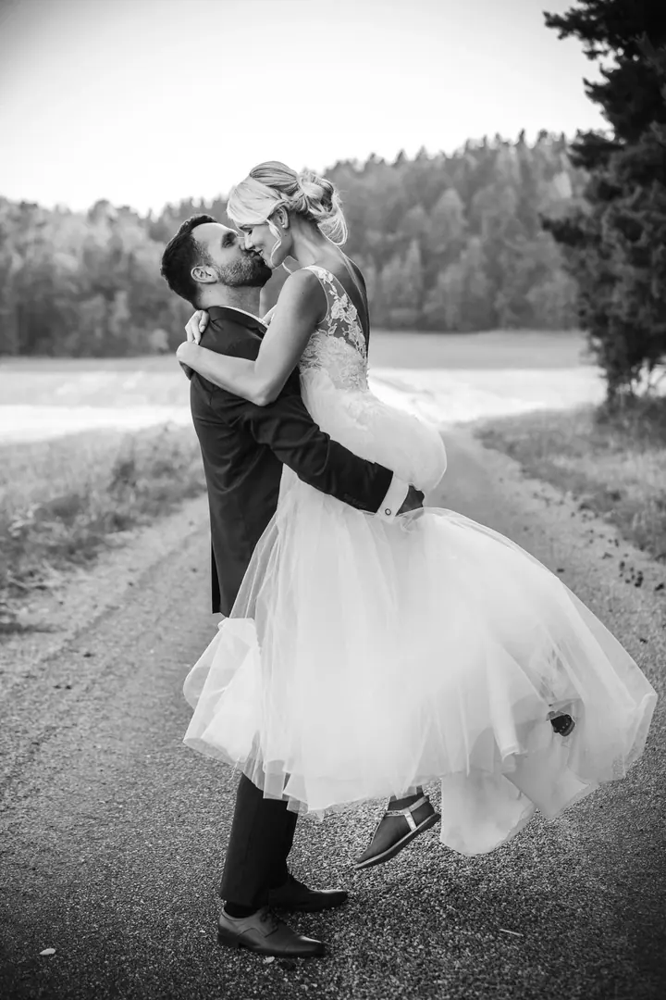
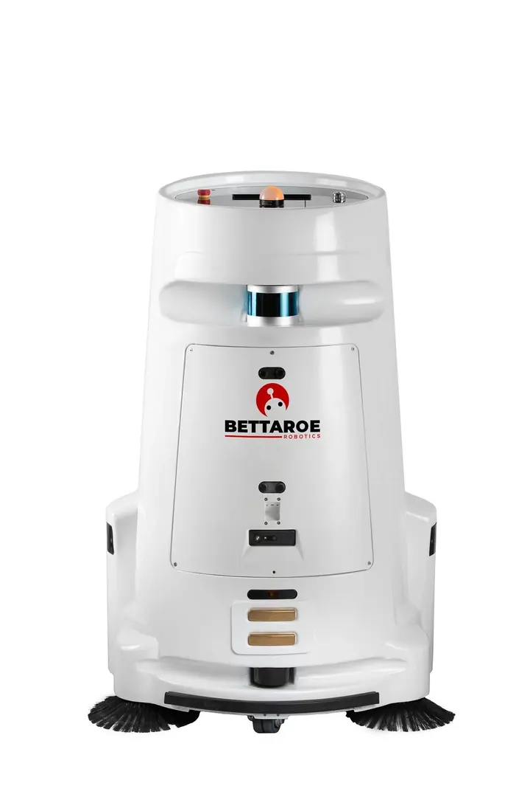
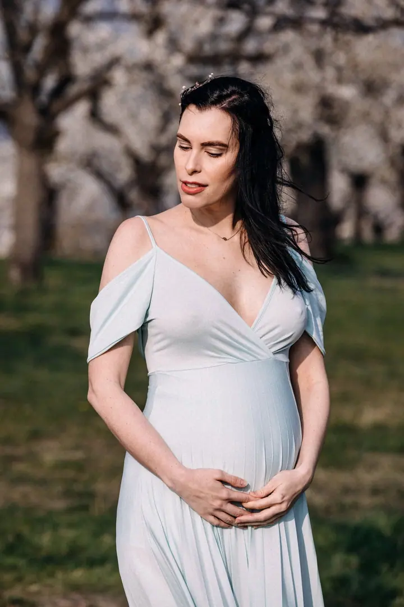
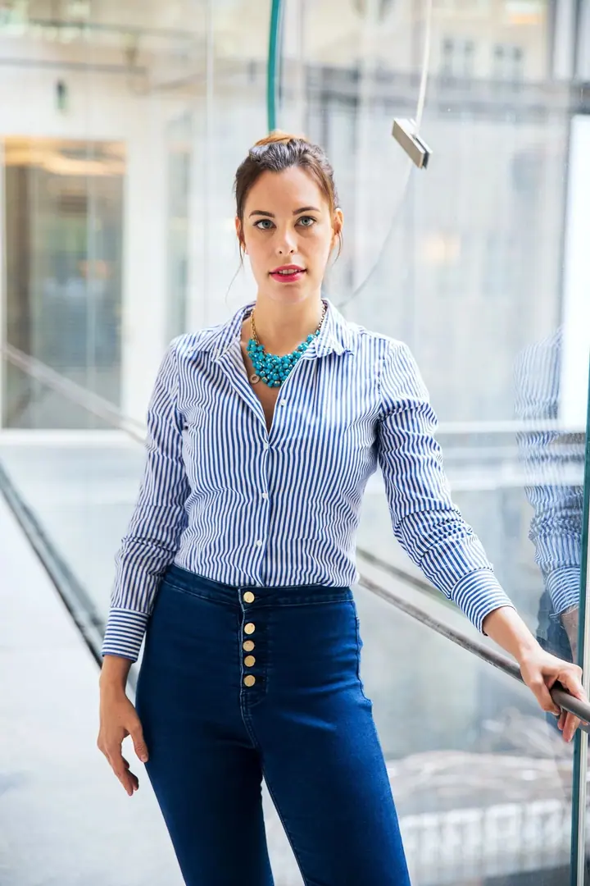

01 / 04
Business portréty
Portréty a business portréty pro firmy i jednotlivce, headshoty pro umělce, umělecké a promo fotografie.
Zeptat se na termín→





Portréty pro firmy i svatby v Praze
Zeptat se na termín →(01) Ahoj
Jmenuji se Martin Večeřa a jsem fotograf z Prahy. Fotím business portréty , produkty, interiéry a reportáže z akcí , a když se blíží váš svatební den, rád ho nafotím taky . Pracuji s profesionální technikou Canon.
(02) Co fotím
01 / 04
Portréty a business portréty pro firmy i jednotlivce, headshoty pro umělce, umělecké a promo fotografie.
Zeptat se na termín→02 / 04
Svatbu fotím přirozeně a citlivě, s důrazem na skutečné momenty, detaily a váš příběh. Vybrat si můžete ze tří balíčků od 7 000 Kč.
Zeptat se na termín→03 / 04
Fotím produkty pro e-shopy a katalogy, jídla, nápoje a koktejly do menu a interiéry restaurací, klubů, salonů i sportovišť.
Zeptat se na termín→Dále nabízím
Fotím reportáže z důležitých akcí a událostí, třeba z konferencí nebo maturitních plesů. Používám profesionální techniku Canon.
↗(04) Postup
Od první zprávy po hotovou galerii.
Krok 1 z 4
Napište mi nebo zavolejte, co potřebujete nafotit. Společně vybereme termín, místo a u svatby i balíček, který vám bude sedět.
Krok 2 z 4
Před svatbou se alespoň jednou sejdeme, probereme vaše představy o fotkách a doladíme organizaci dne. U firemních zakázek si upřesníme, k čemu fotky budete používat.
Krok 3 z 4
Fotím přirozeně a při focení vás nenásilně povedu. Mám s sebou profesionální techniku Canon a záložní fotoaparát.
Krok 4 z 4
Svatební fotky upravím černobíle i barevně a pošlu vám je do soukromé online galerie a na flash disku. První ukázky máte už pár dní po svatbě.
Skutečné momenty, detaily a váš příběh.
(05) Za objektivem
Fotím pro firmy i jednotlivce. Dělám business portréty, headshoty pro umělce i promo fotografie, fotím produkty pro e-shopy a katalogy a nafotím také restaurace, kluby, kosmetické salony nebo sportovní zařízení. Dobré jídlo a nápoje se prodávají lépe, když je zákazník vidí, a proto fotím i menu a koktejly.
Velkou část mé práce tvoří svatby. Svatební den je jedinečný a neopakovatelný a chci zachytit jeho atmosféru, emoce i všechny důležité okamžiky tak, abyste se k nim mohli vracet i po letech. Kromě samotného dne nabízím také předsvatební focení, díky kterému se před objektivem budete cítit jistěji a uvolněněji.
Fotím na profesionální techniku Canon a pro jistotu s sebou nosím i náhradní fotoaparát. Najdete mě v Praze 10, kde také pronajímám ateliér. Po Praze jezdím zdarma, ale rád přijedu i kamkoliv jinam.
Martin
Martin Večeřa · Fotograf pro firmy a svatby
Mám tři balíčky. První za 7 000 Kč zahrnuje obřad, gratulace, skupinové fotky a portréty novomanželů, asi 1,5 hodiny focení. Druhý za 17 000 Kč pokryje den od obřadu po první tanec, zhruba 7 až 9 hodin. Třetí za 25 000 Kč zachytí celý den od příprav po večerní párty a obsahuje i párové focení před svatbou.
Ne. Po Praze jezdím zdarma, ale rád přijedu kamkoliv mimo Prahu. Dopravu účtuji 9 Kč za kilometr.
První ukázkové fotky vám pošlu v nejbližších dnech po svatbě. Všechny upravené fotografie dostanete do 14 dnů v online galerii i na flash disku.
Ano, ke každému svatebnímu balíčku si můžete přiobjednat profesionálního svatebního kameramana.
(07) Kontakt
Napište pár vět o tom, co si představujete, a termín, který se vám hodí.